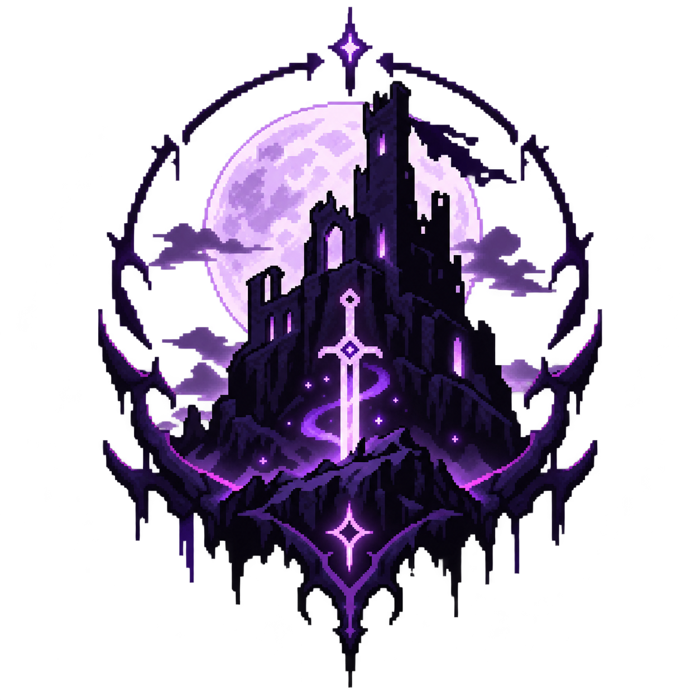
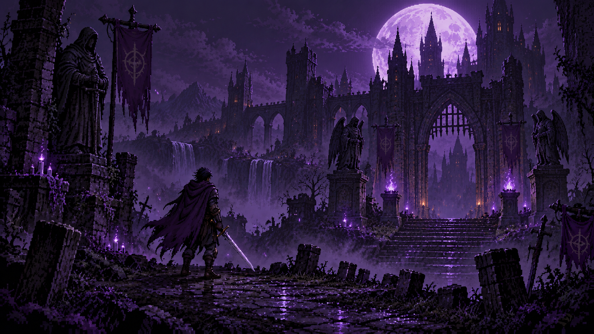
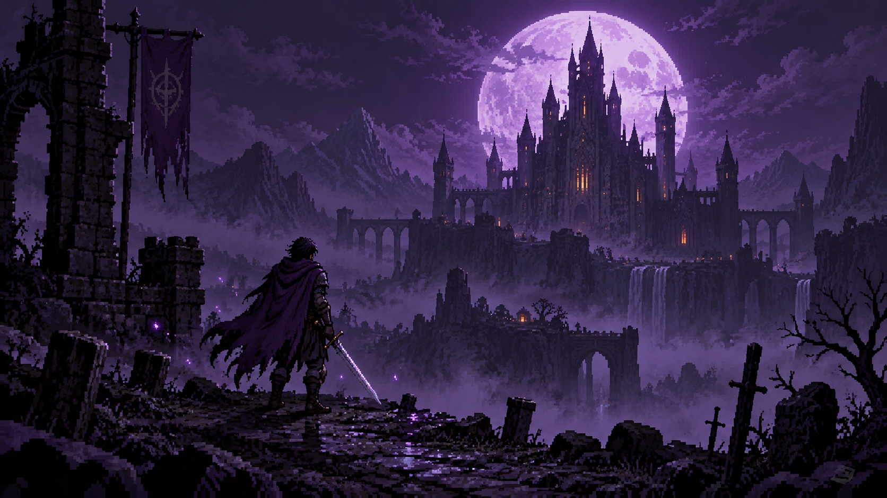
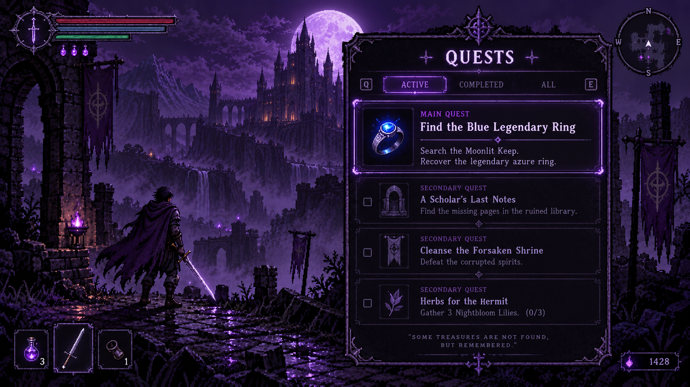
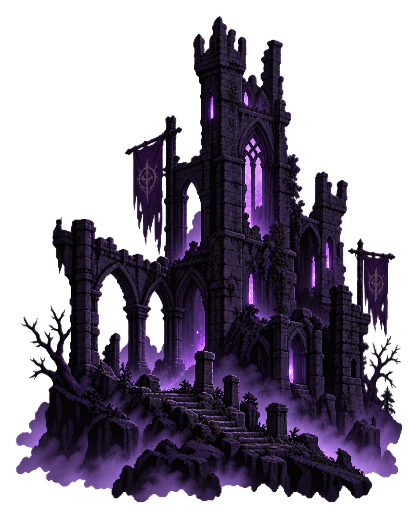

Ruins with a memory.
Cross broken bridges, abandoned keeps and hidden chambers shaped by an old catastrophe.

FORSAKENVISNE GAMESA DARK PIXEL FANTASY
Beyond the moonlit ruins, something ancient is waiting. Enter the fallen kingdom, follow the blue flame, and recover what the darkness buried.
DOWNLOAD GAME ↓Forsaken blends detailed pixel art with layered lighting, fog and depth — keeping the indie look while giving every ruin a cinematic sense of scale.
Cross broken bridges, abandoned keeps and hidden chambers shaped by an old catastrophe.
Read your enemies, move carefully and make every strike count.
Track relics and fragments of lore leading toward the legendary ring.




THE NIGHT REMEMBERS.